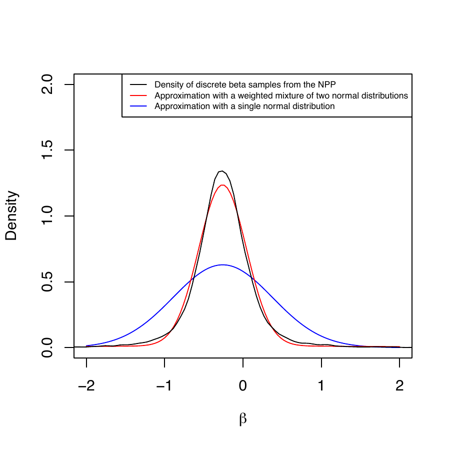

The BayesPPDSurv (Bayesian Power Prior Design for Survival Data) R package supports Bayesian power and type I error calculations and model fitting using the power and normalized power priors incorporating historical data for the analysis of time-to-event outcomes. The package implements the stratified proportional hazards regression model with piecewise constant hazard within each stratum. The package allows the historical data to inform the treatment effect parameter, parameter effects for other covariates in the regression model, as well as the baseline hazard parameters. The use of multiple historical datasets is supported. A novel algorithm is developed for computationally efficient use of the normalized power prior. In addition, the package supports the use of arbitrary sampling priors for computing Bayesian power and type I error rates, and has built-in features that semi-automatically generate sampling priors from the historical data. We demonstrate the use of BayesPPDSurv in a comprehensive case study for a melanoma clinical trial design.
The incorporation of historical information in clinical trial design has become increasingly popular due to its potential for making trials more efficient. If the historical trial is sufficiently similar to the current trial, one can achieve more accurate point estimates and increased power (Viele et al. 2014). One natural way of integrating historical information is through informative priors in a Bayesian framework. The power prior (Ibrahim and Chen 2000) is a popular class of informative priors that allow the incorporation of historical data through a discounted likelihood. It is constructed by raising the historical data likelihood to a power \(a_0\), where \(0 \le a_0 \le 1\). The discounting parameter \(a_0\) can be fixed or modeled as random. When it is modeled as random and estimated jointly with other parameters of interest (denoted by \(\theta\)), the normalized power prior (Duan et al. 2006) is recommended, as normalization is critical to enabling the prior to factor into a conditional distribution of \(\theta\) given \(a_0\) and a marginal distribution of \(a_0\). Some challenges of adopting methods for borrowing from historical data include the potential for type I error inflation with prior-data conflict and the difficulty in calibrating how much to borrow, e.g., the choice of \(a_0\) in the case of the power prior.
The power prior is widely used due to its easy construction and intuitive interpretation (Ibrahim et al. 2015). The theoretical properties of the power prior and the normalized power prior have been extensively studied. For example, (Ibrahim et al. 2003) show that the power prior is an optimal class of informative priors in the sense that it minimizes a convex sum of the Kullback–Leibler (KL) divergences between two posterior densities, in which one density is based on no incorporation of historical data, and the other density is based on pooling the historical and current data. (Shen et al. 2023a) show that the marginal posterior for the discounting parameter converges to a point mass at zero if there is any discrepancy between the historical and current data. They also show that the marginal posterior for \(a_0\) does not converge to a point mass at one when the datasets are fully compatible, and yet, for an i.i.d. normal model and finite sample size, the marginal posterior for \(a_0\) always has most of its mass around one when the datasets are fully compatible. (Chen and Ibrahim 2006) and (Shen et al. 2024a) establish the analytic connection between the power and the normalized power priors and Bayesian hierarchical models, respectively. The normalizing constant in the normalized power prior is analytically intractable when there are covariates, except in the case of the normal linear model. (Carvalho and Ibrahim 2021) propose a bisection-type algorithm for computing the normalizing constant. In our package, BayesPPDSurv (Bayesian Power Prior Design for Survival Data), we propose a novel algorithm that provides an arbitrarily accurate approximation to the normalized power prior for \(\theta\) itself, avoiding the need to compute the normalizing constant and thus providing significant computational efficiency.
The focus of the BayesPPDSurv package is on applying the power prior and normalized power prior to time-to-event outcomes for sample size determination and/or data analysis. In particular, we implement the proportional hazards model (Cox 1972) with piecewise constant baseline hazard (Friedman 1982). Modeling the baseline hazard with a piecewise constant function is a widely used approach in Bayesian analysis (Ibrahim et al. 2001). Several R packages on CRAN implement the piecewise constant hazard model. The pch package (Frumento 2024) implements the piecewise constant hazard model for censored and truncated data. The gsDesign package (Anderson 2024) supports the piecewise constant hazard model for group sequential clinical trial design. These packages do not allow the inclusion of historical data. There are several R packages that implement the power prior or variations of the power prior for the purpose of model estimation or design. The BayesCTDesign package (Eggleston et al. 2021) supports two-arm randomized Bayesian trial design using historical control data with the power prior for a variety of outcome models, including the Weibull and piecewise constant hazard models for time-to-event outcomes. However, it does not allow using the historical data to inform the treatment effect parameter or parameter effects for other covariates. The bayesDP package (Balcome et al. 2021) implements the discounted power prior for single arm and two-arm clinical trials where the discounting parameter is determined by a discounting function estimated based on a measure of prior-data conflict. While it accommodates borrowing historical information for the treatment effect with the piecewise constant hazard model, it does not allow additional covariates, and it must be used in conjunction with the package bayesCT (Chandereng et al. 2020) for trial design. There are three R packages that implement the normalized power prior where \(a_0\) is modeled as random. The NPP package (Han et al. 2021) supports posterior sampling using the normalized power prior for Bernoulli, normal, multinomial and Poisson models, as well as for the normal linear model. The hdbayes (Alt 2022) package implements several methods that leverage historical data for generalized linear models, including the power prior and the normalized power prior. These two packages do not accommodate models for time-to-event outcomes, nor do they perform sample size determination. The R package BayesPPD (Shen et al. 2023c) supports trial analysis and design using the power prior and the normalized power prior for generalized linear models, but it does not support models for time-to-event outcomes.
Our package BayesPPDSurv (Shen et al. 2024b) addresses an important gap by providing a suite of functions for Bayesian power and type I error rate calculations and model fitting after incorporating historical data with the power prior and the normalized power prior for time-to-event data. It implements the stratified proportional hazards regression model with piecewise constant hazard within each stratum. The package allows the historical data to inform the treatment effect parameter, parameter effects for other covariates in the hazard ratio regression model, as well as the baseline hazard parameters. The time interval partition for the piecewise baseline hazards can be stratified. The discounting parameter \(a_0\) can be fixed or modeled as random. The use of multiple historical datasets is supported. For sample size determination, we consider the simulation-based method developed in (Chen et al. 2011) utilizing the sampling and fitting priors (Wang and Gelfand 2002) as applied in (Psioda and Ibrahim 2019). The package supports the use of arbitrary sampling priors for computing Bayesian power and type I error rates, and has built-in features that semi-automatically generate sampling priors from the historical data. BayesPPDSurv is computationally efficient. It implements the slice sampler (Neal 2003) with Rcpp (Eddelbuettel and Francois 2011), and functions for analysis take less than a minute to execute in most instances.
The rest of the article proceeds as follows. In section 2, we describe the theoretical details of the methods implemented in the package. In section 3, we provide details on using the package and its various features. In section 4, we present a comprehensive case study for a melanoma clinical trial design with example code. The article is concluded with a brief discussion.
Let \(D\) denote data from the current study and \(D_0\) denote data from a historical study. Let \(\theta\) denote the model parameters and \(L(\theta|D)\) denote a general likelihood function associated with a given outcome model, such as a generalized linear model (GLM) or a survival model. The power prior (Ibrahim and Chen 2000) is defined as \[\pi(\theta|D_0, a_0) \propto L(\theta|D_0)^{a_0}\pi_0(\theta),\] where \(0 \le a_0 \le 1\) is a discounting parameter for the historical data likelihood, and \(\pi_0(\theta)\) is the initial prior for \(\theta\). The parameter \(a_0\) allows one to control the influence of the historical data on the posterior distribution. When \(a_0=0\), historical information is disregarded and the power prior becomes equivalent to the initial prior \(\pi_0(\theta)\). Conversely, when \(a_0=1\), the power prior corresponds to the posterior distribution of \(\theta\) given the historical data and the initial prior.
The power prior can easily accommodate multiple historical datasets. Suppose there are \(J\) historical datasets denoted by \(D_{0j}\) for \(j=1,\cdots, J\) and let \(D_0=(D_{01}, \cdots, D_{0J})\). The power prior becomes \[\pi(\theta|D_0, a_0) \propto \prod_{j=1}^J L(\theta|D_{0j})^{a_{0j}}\pi_0(\theta),\] where \(a_0 = (a_{01},\cdots,a_{0J})'\) are dataset-specific discounting parameters and \(0\le a_{0j} \le 1\) for \(j=1,\cdots,J\).
Modeling \(a_0\) as random allows one to represent uncertainty in how much the historical data should be discounted. (Duan et al. 2006) introduce the normalized power prior, given by \[\pi(\theta, a_0|D_0) = \pi(\theta|D_0, a_0)\pi(a_0) = \frac{L(\theta|D_0)^{a_0}\pi_0(\theta)}{c(a_0)}\pi(a_0),\] where \(\pi(a_0)\) is the initial prior for \(a_0\). The normalized power prior specifies a conditional prior for \(\theta\) given \(a_0\) and a marginal prior for \(a_0\). The normalizing constant, \[c(a_0)=\int L(\theta|D_0)^{a_0}\pi_0(\theta) d\theta,\] is often analytically intractable and requires Monte Carlo methods for estimation. In BayesPPDSurv, we implement a novel and computationally viable method for using the normalized power prior that avoids the need to compute the normalizing constant.
In BayesPPDSurv, we implement the stratified proportional hazards model with piecewise constant baseline hazard within each stratum, which is a common approach for Bayesian analysis of time-to-event data (Ibrahim et al. 2001).
In Table 1, we provide a summary of the notation used in our model. In our implementation, we allow the incorporation of a stratification variable with \(S\) levels, where \(s=1,\dots,S\) is the stratum index. Let \(\lambda_s(t)\) denote the baseline hazard and \(\Lambda_s(t)\) denote the cumulative baseline hazard for stratum \(s\). Let \(t_i\) denote the time to event and \(c_i\) denote the time to censorship for subject \(i\), \(i=1,\dots,n\). Suppose \(\nu_i=I[t_i \le c_i]\) denotes the indicator that an event is observed for subject \(i\), \(y_i=\min(t_i, c_i)\) denotes the individual’s observation time, and \(x_i=(x_{i1},\dots,x_{iP})'\) denotes a \(P \times 1\) vector of covariates, where without loss of generality we assume \(x_{i1}\) is the treatment indicator. If there are no additional covariates, \(x_i\) will consist of the treatment indicator only. The current data consists of \(D = \{(y_{i}, x_{i}, \nu_{i}), i=1,\cdots, n\}\). Further, \(\beta=(\beta_1,\dots,\beta_P)'\) denotes a \(P \times 1\) vector of regression coefficients, where \(\beta_1\) is the coefficient for the treatment indicator, and \(\lambda\) denotes the set of all baseline hazard parameters. Then, the likelihood of a stratified proportional hazards model is given by \[\begin{aligned} L(\beta,\lambda|D)\propto &\prod_{i=1}^n\{\lambda_{[s_i]}(y_i)\exp(x_i'\beta)\}^{\nu_i}\exp\{-\Lambda_{[s_i]}(y_i)\exp(x_i'\beta)\}. \end{aligned}\]
| Indices | |
|---|---|
| \(s=1,\dots,S\) | stratum index |
| \(i=1,\dots,n\) | subject index |
| \(k=1,\dots,K_s\) | time interval index |
| \(j=1,\dots,J\) | historical dataset index |
| \(G_s\) | the set of indices corresponding to subjects from stratum \(s\). |
| Subject-level variables | |
| \(t_i\) | time to event for subject \(i\) |
| \(c_i\) | time to censorship for subject \(i\) |
| \(\nu_i=I[t_i \le c_i]\) | the indicator that an event is observed for subject \(i\) |
| \(y_i=\min(t_i, c_i)\) | observation time for subject \(i\) |
| \(x_i=(x_{i1},\dots,x_{iP})'\) | covariates for subject \(i\) |
| Interval-level variables | |
| \(t_{s,0} < \cdots < t_{s,K_s}\) | change points for stratum \(s\) |
| \(I_{s,k}=(t_{s,k-1}, t_{s,k}]\) | the \(k\)-th interval for stratum \(s\) |
| \(\nu_{ik}\) | the indicator that the event occurred in interval \(I_{s_i,k}\) |
| \(r_{ik}\) | the subject’s time at risk in interval \(I_{s_i,k}\) |
| Parameters | |
| \(\lambda_{sk}\) | constant hazard over interval \(I_{s,k}\) for stratum \(s\) |
| \(\beta=(\beta_1,\dots,\beta_P)'\) | regression coefficients |
| \(a_0=(a_{01},\dots,a_{0J})\) | the discounting parameters for the \(J\) historical datasets |
The package allows the baseline hazard and time interval partition to vary across the \(S\) levels of the stratification variable. For stratum \(s\), we partition time into \(K_s\) intervals, where \(k=1,\dots,K_s\) is the interval index, with change points \(0=t_{s,0} < t_{s,1} < \cdots < t_{s,K_s} = \infty\). Suppose \(\lambda_{sk} > 0\) denotes the constant hazard over interval \(I_{s,k}=(t_{s,k-1}, t_{s,k}]\) for stratum \(s\), \(\nu_{ik}\) denotes the indicator that the event occurred in interval \(I_{s_i,k}\), \(r_{ik}\) denotes the subject’s time at risk in interval \(I_{s_i,k}\), and \(G_s\) denotes the set of indices corresponding to subjects from stratum \(s\). Then the likelihood of a PWCH-PH model can be re-written as \[\begin{aligned} \label{likelihood} L(\beta,\lambda|D)\propto\prod_{s=1}^S\prod_{k=1}^{K_s}\lambda_{sk}^{\sum\limits_{i\in G_s}\nu_{ik}}\exp\left\{-\lambda_{sk}\left(\sum_{i\in G_s}\exp(x_i'\beta)r_{ik}\right)\right\}\times \prod_{i=1}^n\exp(x_i'\beta)^{\nu_i}. \end{aligned} \tag{1}\]
Suppose there are \(J\) historical datasets, \(j=1,\dots,J\), each with sample size \(n_{0j}\). Analogously, the \(j^{th}\) historical dataset consists of \(D_{0j} = \{(y_{0ji}, x_{0ji}, \nu_{0ji}), i=1,\cdots, n_{0j}\}\), where \(y_{0ji}\), \(x_{0ji}\) and \(\nu_{0ji}\) correspond to the individual’s observation time, covariate vector and event indicator, respectively, for subject \(i\) in historical data \(j\). Suppose \(G_{sj}\) denotes the set of indices corresponding to subjects from stratum \(s\) in historical dataset \(j\). Let \(\nu_{0ik}\) denote the indicator that the event occurred in interval \(I_{s_i,k}\) and \(r_{0ik}\) denote the subject’s time at risk in interval \(I_{s_i,k}\) for subjects in the historical datasets. The baseline hazard for the historical data for stratum \(s\) and interval \(k\) is denoted by \(\lambda_{0sk}\), and \(\lambda_0\) denotes the set of all baseline hazard parameters for the historical data. Let \(a_0=(a_{01},\dots,a_{0J})\) denote the discounting parameters for the \(J\) historical datasets, where \(a_{0j}\) discounts the \(j^{th}\) historical dataset. Then, the power prior for \(\beta\) is given by
\[\begin{aligned} &\pi(\beta|D_0, \lambda_0, a_0) \propto \prod_{j=1}^JL(\beta|\lambda_0,D_{0j})^{a_{0j}}\times\pi_0(\beta)\\ \label{prior} \propto&\prod_{j=1}^J\prod_{s=1}^S\prod_{k=1}^{K_s}\lambda_{0sk}^{a_{0j}\left(\sum_{i\in G_{sj}}\nu_{0ik}\right)}\exp\left\{-a_{0j}\lambda_{0sk}\left(\sum_{i\in G_{sj}}\exp(x_{0i}'\beta)r_{0ik}\right)\right\}\times\prod_{j=1}^J\prod_{i=1}^{n_{0j}}\exp(x_{0i}'\beta)^{\nu_{0i}a_{0j}}\times\pi_0(\beta). %\propto&\prod_{s=1}^S\prod_{k=1}^{K_s}\lambda_{0sk}^{\sum_{j=1}^Ja_{0j}\left(\sum_{i\in G_{sj}}\nu_{0ik}\right)}\exp\left\{-\sum_{j=1}^Ja_{0j}\lambda_{0sk}\left(\sum_{i\in G_{sj}}\exp(x_{0i}'\beta)r_{0ik}\right)\right\}\times \prod_{j=1}^J\prod_{i=1}^{n_{0j}}\exp(x_{0i}'\beta)^{\nu_{0i}a_{0j}}\times\pi_0(\beta)\\ \end{aligned} \tag{2}\]
In this formulation, the current and historical datasets have different
baseline hazard parameters (\(\lambda\) in (1) and
\(\lambda_0\) in (2)), so the historical data does not
directly inform the inference for \(\lambda\). If we assume the current
and historical data share the same set of baseline hazard parameters,
then \(\lambda_0=\lambda\), and the historical information is used to
estimate \(\lambda\) directly. In BayesPPDSurv, when the power prior
is used with functions phm.fixed.a0 and power.phm.fixed.a0, one can
use the shared.blh argument to choose whether the baseline hazard
parameters are shared. By default, shared.blh=FALSE. When the
normalized power prior is used with functions phm.random.a0 and
power.phm.random.a0, the baseline hazard parameters have to be
unshared.
For the initial prior on \(\beta\), the package allows several choices of priors, including the uniform improper prior and independent normal priors for each component of \(\beta\). For the priors on the \(\lambda_{sk}\)’s, the package allows independent Gamma priors, independent normal priors on \(\log(\lambda_{sk})\), and the improper prior \(\pi(\lambda) \sim \prod_{s=1}^S \prod_{k=1}^K \lambda_{sk}^{-1}.\) If the baseline hazard parameters are not shared between the current and historical data, the prior choices supported for \(\lambda_0\) are independent Gamma priors, independent normal priors on \(\log(\lambda_{0sk})\), and the improper prior \(\pi(\lambda_0) \sim \prod_{s=1}^S \prod_{k=1}^K \lambda_{0sk}^{-1}\).
BayesPPDSurv supports the use of a normalized power prior for the case where \(a_0\) is modeled as random and the baseline hazard parameters are unshared between the current and historical data (i.e., \(\lambda \neq \lambda_0\)). We use independent normal initial priors for \(\beta\), \(N(\mu_p, \sigma_p^2)\) for each \(\beta_p\), independent gamma priors for \(\lambda\) and \(\lambda_0\) and independent beta priors for \(a_0\). Specifically, we use \[\lambda_{sk} \sim \text{Gamma}(a_{sk}, b_{sk}),\]
\[\lambda_{0sk} \sim \text{Gamma}(c_{sk}, d_{sk}),\] and \[a_{0j} \sim beta(u_{j}, v_{j}),\] where \(a_{sk}\), \(b_{sk}\), \(c_{sk}\), \(d_{sk}\), \(u_{j}\) and \(v_{j}\) are user-specified hyperparameters. The joint prior for \(\beta\), \(\lambda\), \(\lambda_0\) and \(a_0\) can now be written as \[\pi(\beta,\lambda,\lambda_0,a_0|D_0)\propto\pi(\lambda_0|\beta,a_0,D_0) \times \pi(\beta|D_0, a_0) \times \pi(a_0) \times \pi(\lambda).\] We first factor \(\pi(\beta,\lambda_0|D_0,a_0)\) into \(\pi(\beta|D_0, a_0) \times \pi(\lambda_0|\beta,a_0,D_0)\). We have
\[\begin{aligned} &\pi(\beta,\lambda_0|D_0,a_0)\propto\prod_{j=1}^JL(\beta, \lambda_0|D_{0j})^{a_{0j}}\pi_0(\beta)\pi(\lambda_0)\\ =&\prod_{s=1}^S\prod_{k=1}^{K_s}\lambda_{0sk}^{\sum_{j=1}^Ja_{0j}\left(\sum_{i\in G_{sj}}\nu_{0ik}\right)}\exp\left\{-\sum_{j=1}^Ja_{0j}\lambda_{0sk}\left(\sum_{i\in G_{sj}}\exp(x_{0i}'\beta)r_{0ik}\right)\right\}\frac{d_{sk}^{c_{sk}}}{\Gamma(c_{sk})}\lambda_{0sk}^{c_{sk}-1}\exp(-d_{sk}\lambda_{0sk})\\ &\times \prod_{p=1}^P N(\mu_p,\sigma_p^2)\times\prod_{j=1}^J\prod_{i=1}^{n_{0j}}\exp(x_{0i}'\beta)^{\nu_{0i}a_{0j}} \\ =&\prod_{p=1}^P N(\mu_p,\sigma_p^2)\prod_{j=1}^J\prod_{i=1}^{n_{0j}}\exp(x_{0i}'\beta)^{\nu_{0i}a_{0j}}\prod_{s=1}^S\prod_{k=1}^{K_s}\frac{\frac{d_{sk}^{c_{sk}}}{\Gamma(c_{sk})}\Gamma(p_{sk})}{q_{sk}^{p_{sk}}} \times \text{Gamma}(\lambda_0; p_{sk}, q_{sk}), \end{aligned}\]
where
\(p_{sk}=\sum_{j=1}^Ja_{0j}\left(\sum_{i\in G_{sj}}\nu_{0ik}\right)+c_{sk}\)
and
\(q_{sk}=\sum_{j=1}^Ja_{0j}\left(\sum_{i\in G_{sj}}\exp(x_{0i}'\beta)r_{0ik}\right)+d_{sk}\).
Then
\[\pi(\lambda_{0sk}|\beta,a_0,D_0)=\text{Gamma}(\lambda_{0sk}; p_{sk}, q_{sk}),\]
and
\[\label{kernel}
\pi(\beta|D_0, a_0) \propto \prod_{s=1}^S\prod_{k=1}^{K_s}q_{sk}^{-p_{sk}}\prod_{j=1}^J\prod_{i=1}^{n_{0j}}\exp(x_{0i}'\beta)^{\nu_{0i}a_{0j}}\prod_{p=1}^P N(\mu_p,\sigma_p^2). \tag{3}\]
When using the normalized power prior in BayesPPDSurv, for
simplicity of computation, we focus on inferences for \(\beta\) and
\(\lambda\) only, so we marginalize over \(\lambda_0\) and \(a_0\) to obtain
\[\begin{aligned}
\pi(\beta,\lambda|D_0) &= \int\int\pi(\lambda_0|\beta,a_0,D_0) \times \pi(\beta|D_0, a_0) \times \pi(a_0) \times \pi(\lambda)d\lambda_0da_0\\
&=\int\pi(\beta|D_0, a_0)\pi(a_0)da_0 \times \pi(\lambda).
\end{aligned}\]
The normalizing constant for equation (3) is analytically
intractable. In BayesPPD, we implemented an algorithm (Shen et al. 2023b)
that approximates the normalizing constant with the partition weighted
kernel estimator (Wang et al. 2018). In BayesPPDSurv, instead of
approximating the normalizing constant, we approximate the normalized
power prior for \(\beta\) itself,
\(\pi(\beta|D_0)=\int\pi(\beta|D_0, a_0)\pi(a_0)da_0\), with a
multivariate normal distribution, utilizing the Bayesian Central Limit
Theorem (Chen 1985). We propose a novel algorithm to approximate
\(\pi(\beta|D_0)\) as follows:
Sample \(a_{01}, \dots, a_{0L}\) from \(\pi(a_0)\), where \(L=10,000\), for example. Note that each \(a_{0l}\) is a \(J \times 1\) vector corresponding to the \(J\) historical datasets.
Given each \(a_{0l}\), use slice sampling (Neal 2003) to obtain a sample of \(\beta_l\) (after burn-in) based on the kernel of \(\pi(\beta|a_{0l}, D_0)\) in equation (3).
Given \(\beta_1, \dots, \beta_L\), the distribution \(\pi(\beta|D_0)\) can be approximated by a multivariate normal distribution or a mixture of multivariate normals. The mixture of multivariate normals can lead to an arbitrarily accurate approximation of the samples with a large enough number of components, which is a well-known property of finite mixture models (Titterington et al. 1985; Nguyen et al. 2020). To approximate with a single multivariate normal, one can compute the mean \(\bar{\beta}\) and covariance \(\bar{\Sigma}\) of \(\beta_1, \dots, \beta_L\), and approximate \(\pi(\beta|D_0)\) with \(N_P(\bar{\beta}, \bar{\Sigma})\).
By default, the function phm.random.a0() approximates \(\pi(\beta|D_0)\)
with a single multivariate normal distribution,
\(N_P(\bar{\beta}, \bar{\Sigma})\). The package allows the user to
approximate \(\pi(\beta|D_0)\) with any finite mixture of multivariate
normal distributions as well. To achieve this, the user can take the
output of the function approximate.prior.beta(), which are discrete
samples of \(\beta_l\), \(l=1,\dots,L\), and use external software to
compute a mixture of multivariate normal distributions that best
approximates the samples. In Table 5 of section 4, we show that this method provides highly accurate
approximations. One drawback of this approximation method is that the
posterior samples of \(a_0\) and \(\lambda_0\) cannot be obtained. Further
details are given in section 3.
To perform Bayesian sample size determination, we use the
simulation-based procedure proposed in (Chen et al. 2011). We assume the first
column of the covariate matrix is the treatment indicator, and the
corresponding parameter is \(\beta_1\), the log hazard ratio. By default,
the hypotheses are given by
\[H_0: \beta_1 \ge \delta\]
and
\[H_1: \beta_1 < \delta,\]
where \(\delta\) is a prespecified value. To test hypotheses in the
opposite direction, i.e., \(H_0: \beta_1 \le \delta\) and
\(H_1: \beta_1 > \delta\), one can set the parameter nullspace.ineq to
"\(<\)".
Now we discuss the simulation-based procedure used to estimate the Bayesian type I error rate and power. Let \(\Theta_0\) and \(\Theta_1\) denote the parameter spaces corresponding to \(H_0\) and \(H_1\). Let \(y^{(n)}\) denote the simulated current data associated with a sample size of \(n\), \(\theta=(\beta, \lambda, \lambda_0)\) denotes the model parameters, \(\pi^{(s)}(\theta)\) denotes the sampling prior, and \(\pi^{(f)}(\theta)\) denotes the fitting prior. The sampling prior is used to generate the hypothetical data while the fitting prior is used to fit the model after the data are generated. Let \(\pi_0^{(s)}(\theta)\) denote the sampling prior that only puts mass in the null region, i.e., \(\theta \subset \Theta_0\), and \(\pi_1^{(s)}(\theta)\) denotes the sampling prior that only puts mass in the alternative region, i.e., \(\theta \subset \Theta_1\). Let \(q_0^{(n)}\) and \(q_1^{(n)}\) denote the Bayesian type I error rate and power, respectively, associated with a sample size of \(n\). Let \(B\) denote the number of simulated trials. To compute the Bayesian power or type I error, the following algorithm is used for each simulated trial \(b\):
Step 1: Generate \(\theta^{(b)} \sim \pi_j^{(s)}(\theta)\), \(j=0,1\). The choice of sampling priors is described in section 3.1.
Step 2: Generate \(y^{(b)} \sim f(y^{(b)}|\theta^{(b)})\). Data generation for the PWCH-PH model is detailed in section 2.6.
Step 3: Estimate the posterior distribution \(\pi(\theta|y^{(b)}, D_0, a_0)\) and the posterior probability \(P(\beta_1 < \delta|y^{(b)}, \pi^{(f)},D_0, a_0)\). Model fitting is performed using a custom slice sampler written in C++ via Rcpp (Neal 2003; Eddelbuettel and Francois 2011).
Step 4: Compute the indicator \(r^{(b)}=I[P(\beta_1 < \delta|y^{(b)}, \pi^{(f)}, D_0, a_0) \ge \gamma]\), where the constant \(\gamma > 0\) is a prespecified posterior probability threshold for rejecting the null hypothesis (e.g., \(0.975\)).
The estimate of \(q_j^{(n)}\) is given by \(\frac{1}{B}\sum_{b=1}^B r^{(b)}\), where \(j=0,1\). The quantity \(q_{0}^{(n)}\) corresponding to \(\pi^{(s)}(\theta)=\pi_0^{(s)}(\theta)\) is the Bayesian type I error rate, while \(q_{1}^{(n)}\) corresponding to \(\pi^{(s)}(\theta)=\pi_1^{(s)}(\theta)\) is the Bayesian power. To identify the desired sample size, we can compute \(n_{\alpha_0} = \min\{n: q_{0}^{(n)} \le \alpha_0\}\) and \(n_{\alpha_1} = \min\{n: q_{1}^{(n)} \ge 1-\alpha_1\}\) for given \(\alpha_0 > 0\) and \(\alpha_1 > 0\), and therefore, the sample size is taken to be max\(\{n_{\alpha_0}, n_{\alpha_1}\}\). Common choices of \(\alpha_0\) and \(\alpha_1\) include \(\alpha_0=0.05\) and \(\alpha_1=0.2\). These choices guarantee that the Bayesian type I error rate is at most \(0.05\) and the Bayesian power is at least \(0.8\). Type I error control can be achieved in two ways with the power prior. Typically, one can decrease the discounting parameter to obtain the desired type I error rate. Alternatively, one can increase \(\gamma\) to address potential type I error inflation after borrowing historical data.
Following (Psioda et al. 2018), we describe the steps for simulating the observed data for the PWCH-PH model. We simulate the complete data for subject \(i\) through the following procedure:
Simulate the enrollment time \(r_i\). The package allows choices of the uniform or the exponential distribution for the distribution for enrollment times.
Simulate the treatment indicator \(x_{i1}\) from a Bernoulli distribution with user-specified randomization probability. The default value is \(0.5\).
Simulate the additional covariates \(x_{i2},\dots,x_{iP}\). The package samples one row of covariates with replacement from the combined covariate matrix of all historical datasets.
Simulate the stratum index \(s_i\). The package samples with replacement from the combined stratum vector of all historical datasets.
Compute \(\phi_i=\exp(x_i'\beta)\) and \(\theta_{i,k}=\lambda_{s_i,k}\phi_i\) for \(k=1,\dots,K_{s_i}\).
Simulate the event time \(t_i\) as follows:
Set \(k=1\).
Simulate \(t_i \sim \text{Exponential}(\text{rate}=\theta_{i,k}) + t_{s_i, k-1}\).
If \(t_i > t_{s_i,k}\), then increment \(k\) by one and return to step (b), otherwise terminate.
Simulate the censorship time \(c_i\). Choices for the distribution of censorship times include the uniform distribution, the exponential distribution, or a user-specified constant time.
Compute the observation time \(\tilde{y}_i=\min(t_i,c_i)\) and the event indicator \(\tilde{\nu}_i=I(t_i \le c_i)\).
Compute the elapsed time \(e_i=r_i+y_i\).
The above procedure yields a hypothetical complete dataset corresponding to a scenario where all subjects are followed until the event is observed or they drop out. One constructs the observed dataset from the complete dataset as follows:
Determine the time \(T\) of target event number \(\nu\) in the complete dataset.
Remove subjects with \(r_i \ge T\).
For the remaining subjects,
If \(e_i > T\), set \(y_i=T-r_i\) and \(\nu_i=0\).
If \(e_i \le T\), set \(y_i=\tilde{y}_i\) and \(\nu_i=\tilde{\nu}_i\).
In the above, the quantity \(\nu\) represents the target number of events that is desired to trigger the primary analysis for the simulated trial. The user can also determine the minimum amount of time (\(T_{\min}\)) and maximum amount of time (\(T_{\max}\)) that subjects are followed. If \(T < T_{\min}\), then \(T\) is replaced by \(T_{\min}\). Administrative censoring occurs at \(T_{\max}\).
BayesPPDSurv supports the incorporation of multiple historical
datasets using the power prior with fixed \(a_0\) or using the normalized
power prior with \(a_0\) modeled as random. It contains two categories of
functions, functions for model fitting ("phm.fixed.a0()" and
"phm.random.a0()") and functions for sample size determination
("power.phm.fixed.a0()" and "power.phm.random.a0()"). Functions
for model fitting return posterior samples of the parameters, while
functions for sample size determination return estimates of the Bayesian
power or type I error rate.
When \(a_0\) is modeled as random, the function approximate.prior.beta()
performs slice sampling to generate samples of \(\beta\) from the
normalized power prior. By default, the function phm.random.a0()
approximates the normalized power prior for \(\beta\), \(\pi(\beta|D_0)\),
with a single multivariate normal distribution. To accommodate greater
accuracy of approximation, the package allows the user to approximate
\(\pi(\beta|D_0)\) with a finite mixture of multivariate normal
distributions as well. Specifically, the user can take the output of the
approximate.prior.beta() function, which is a matrix of samples of
\(\beta\) from the normalized power prior, and use external software to
compute a mixture of multivariate normal distributions that best
approximates the samples. The resulting mixture distribution can then be
the input to the prior.beta.mvn argument of phm.random.a0(), which
is a list of lists, where each list has three elements, consisting of
the mean vector, the covariance matrix and the weight of each
multivariate normal distribution. Then, \(\pi(\beta|D_{0})\) is
approximated by the mixture of the multivariate normal distributions
provided. Since we use \(\lambda_0\) and \(a_0\) as auxiliary variables for
the approximation for \(\pi(\beta|D_0)\), the user specifies the
hyperparameters for the priors for \(\lambda_0\) and \(a_0\) in the function
approximate.prior.beta(). The hyperparameters for the priors for
\(\lambda\) and the initial prior for \(\beta\) are specified in the
function phm.random.a0().
The package allows the time interval partition to vary across the \(S\)
levels of the stratification variable. The user must specify the total
number of intervals for each stratum, n.intervals. Then for each
stratum, by default, the change points are assigned so that an
approximately equal number of events are observed in all the intervals
for the pooled historical and current datasets. The user can also
specify the change points for each stratum. When \(a_0\) is fixed, by
default, the baseline hazard parameters are unshared (i.e.,
\(\lambda \neq \lambda_0\)) between the current and historical data. If
shared.blh=TRUE, baseline hazard parameters are shared and historical
information is used to estimate the baseline hazard parameters. When
\(a_0\) is modeled as random, the package only supports unshared baseline
hazards.
For study design applications, the user can manipulate many attributes of the data generation process, including the enrollment time distribution (uniform or exponential), the randomization probability for the treated group, the censorship time distribution (uniform, exponential or constant), the probability of subjects dropping out of the study (non-administrative censoring), the dropout time distribution (uniform), and the minimum and maximum amount of time that subjects are followed.
Our implementation in BayesPPDSurv does not assume any particular
distribution for the sampling priors. The user specifies discrete
approximations of the sampling priors by providing a matrix or list of
parameter values and the algorithm samples with replacement from the
matrix or the list as the first step of the data generation. The user
must specify samp.prior.beta, a matrix of samples for \(\beta\), and
samp.prior.lambda, a list of matrices where each matrix represents the
sampling prior for the baseline hazards for each stratum. The number of
columns of each matrix must be equal to the number of intervals for that
stratum.
Now we describe strategies to elicit the sampling priors, as detailed in
(Psioda and Ibrahim 2019). Suppose one wants to test the hypotheses
\[H_0: \beta_1 \ge 0\]
and
\[H_1: \beta_1 < 0.\]
To elicit the sampling prior for \(\beta_1\) to compute power, one can
simply sample from a truncated normal distribution with negative mean,
so that the mass of the prior falls in the alternative space.
Conversely, to compute the type I error rate, one can sample from a
truncated normal distribution with positive mean, so that the mass of
the prior falls in the null space. Next, to generate the sampling prior
for the other parameters, \(\beta_2, \dots, \beta_P\) and \(\lambda\) (the
same sampling prior is assumed for \(\lambda_0\)), one can use the
posterior samples given the historical data as the discrete
approximation to the sampling prior. The function phm.fixed.a0()
generates such posterior samples if the current.data argument is set
to FALSE and \(a_{0j}=1\) for \(j=1,\dots,J\). This method is illustrated
in the case study in the following section.
We consider the high-risk melanoma trial design application in (Psioda and Ibrahim 2019), and demonstrate how BayesPPDSurv can be used for coefficient estimation as well as power and type I error rate calculations for time-to-event data in Bayesian clinical trial designs that incorporate historical information.
Interferon Alpha-2b (IFN) is an adjuvant chemotherapy for deep primary or regionally metastatic melanoma. The E1684 trial (Kirkwood et al. 1996) and the E1690 trial (Kirkwood et al. 2000) were randomized controlled trials conducted to evaluate the efficacy of IFN for melanoma following surgery. The studies classified the subjects into four disease stage groups. Following (Psioda and Ibrahim 2019), we restrict our attention to patients in disease stage four, i.e., regional lymph node recurrence at any interval after appropriate surgery for primary melanoma of any depth. The primary outcome is relapse-free survival. The number of positive lymph nodes at lymphadenectomy is used as a stratification variable (\(\le 2\) vs. \(\ge 3\)) due to its prognostic value. We compare patients who received the IFN treatment to those who received observation (OBS). Table 2 summarizes the total number of events and the total risk time by treatment group and number of positive lymph nodes for the two studies.
| Study | Treatment | # Nodes | Sample Size | # Events | Risk Time |
|---|---|---|---|---|---|
| E1684 | OBS | \(\le 2\) | 37 | 26 | 88.4 |
| \(\ge 3\) | 47 | 36 | 105.8 | ||
| IFN | \(\le 2\) | 44 | 21 | 176.3 | |
| \(\ge 3\) | 39 | 31 | 81.1 | ||
| E1690 | OBS | \(\le 2\) | 51 | 23 | 122.4 |
| \(\ge 3\) | 53 | 42 | 78.9 | ||
| IFN | \(\le 2\) | 51 | 29 | 123.1 | |
| \(\ge 3\) | 59 | 36 | 137.0 |
First, suppose we are interested in analyzing the relationship between
relapse-free survival and the IFN treatment for the E1690 study after
incorporating historical information from the E1684 study. We build a
PWCH-PH model with two strata, stratum-specific baseline hazard
parameters (unshared between current and historical datasets) and one
covariate (the treatment indicator). For stratum 1 (# nodes \(\le 2\)), we
use four time intervals (selected using the deviance information
criterion (DIC)). The baseline hazard parameters are \(\lambda_{1,1}\),
\(\lambda_{1,2}\), \(\lambda_{1,3}\), \(\lambda_{1,4}\). For stratum 2 (#
nodes \(\ge 3\)), we use three time intervals (also selected using DIC).
The baseline hazard parameters are \(\lambda_{2,1}\), \(\lambda_{2,2}\),
\(\lambda_{2,3}\). We use the default change points, which are determined
so that an approximately equal number of events are observed in each
time interval for the pooled current and historical datasets. We use the
default initial prior for \(\beta\), a normal prior with mean zero and
variance \(10^3\). We use the default priors for \(\lambda\) and
\(\lambda_0\), which are independent non-informative gamma priors with
shape and rate parameters equal to \(10^{-5}\). The code below
demonstrates the analysis with the E1684 study data as prior information
incorporated through a power prior with \(a_0\) fixed at 0.5. Here, nMC
represents the number of MCMC iterations and nBI represents the number
of burn-in samples.
data(melanoma)
hist <- melanoma[melanoma$study=="1684",]
current <- melanoma[melanoma$study=="1690",]
n.intervals <- c(4,3)
nMC <- 10000
nBI <- 200
historical <- list(list(time=hist$failtime, event=hist$rfscens,
X=as.matrix(hist[,"trt"]), S=hist$stratum))
set.seed(1)
result <- phm.fixed.a0(time=current$failtime, event=current$rfscens,
X=as.matrix(current[,"trt"]), S=current$stratum,
historical=historical, a0=0.5, n.intervals=n.intervals,
nMC=nMC, nBI=nBI)
> quantile(result$beta_samples)
0% 25% 50% 75% 100%
-0.7950745 -0.3694794 -0.2727719 -0.1737096 0.2939300
> colMeans(result$lambda_samples[[1]])
[1] 0.4594304 0.5089287 0.3052143 0.1188887
> colMeans(result$lambda_samples[[2]])
[1] 1.0761066 0.7789043 0.2019115
> colMeans(result$lambda0_samples[[1]])
[1] 0.67388605 0.75062812 0.35459671 0.06557007
> colMeans(result$lambda0_samples[[2]])
[1] 1.3381514 0.7562455 0.1853991Table 3 displays the posterior mean, standard deviation and 95% credible interval for \(\beta\) and elements of \(\lambda\). There is weak evidence suggesting a negative association between IFN and time-to-relapse.
| Parameter | Mean | SD | 95% CI |
|---|---|---|---|
| \(\beta\) | -0.27 | 0.15 | (-0.57, 0.01) |
| \(\lambda_{1,1}\) | 0.46 | 0.14 | (0.23, 0.77) |
| \(\lambda_{1,2}\) | 0.51 | 0.15 | (0.26, 0.83) |
| \(\lambda_{1,3}\) | 0.31 | 0.09 | (0.16, 0.50) |
| \(\lambda_{1,4}\) | 0.12 | 0.03 | (0.07, 0.19) |
| \(\lambda_{2,1}\) | 1.08 | 0.23 | (0.68, 1.57) |
| \(\lambda_{2,2}\) | 0.78 | 0.16 | (0.50, 1.12) |
| \(\lambda_{2,3}\) | 0.20 | 0.04 | (0.12, 0.30) |
Next, our goal is to design a new trial incorporating the E1684 study using the power prior and the normalized power prior. We first specify the characteristics of trial data simulation. Let \(\nu\) be the number of events at which the trial will stop and let \(n\) be the total number of subjects enrolled. For each \(\nu\), we take \(n = 3\nu\). The choice of \(n = 3\nu\) here is for illustrative purposes only. In any trial, the sample size just needs to be larger than \(\nu\). In practice, the sample size and the targeted number of events will depend on many factors such as the enrollment rate, the desired follow-up duration, and the cost of enrolling patients. We assume a subject’s enrollment time follows a uniform distribution over a 4-year period. We allocate 50% of the subjects to the treatment group. For stratum allocation, we sample from the stratum indices of the historical data with replacement. We assume there is only administrative censoring which occurs when \(\nu\) events have accrued. In the data generation phase, we use the default change points which are determined so that an approximately equal number of events are observed in each time interval for the historical dataset. When analyzing the generated data, we use the default change points which are determined so that an approximately equal number of events are observed in each time interval for the pooled current and historical datasets. The baseline hazard parameters are not shared between the current and historical data. The same set of default priors are used for \(\beta\), \(\lambda\) and \(\lambda_0\) as before.
We compute the Bayesian power and type I error rate for a few sample
sizes for tests of the hypotheses
\[H_0: \beta \ge 0\]
and
\[H_1: \beta < 0.\]
We use two sets of sampling priors, the default null (DN) and default
alternative (DA) sampling priors, and the frequentist null (FN) and
point-mass alternative (PA) sampling priors. The default null sampling
prior is defined as \(\pi_0^{(s)}=\pi(\theta|D_0, \beta \ge 0)\). The
default alternative sampling prior is defined as
\(\pi_0^{(s)}=\pi(\theta|D_0, \beta < 0)\). The FN sampling prior is a
point-mass prior at \(\beta=0\), which results in a Bayesian type I error
rate that is closely related to the standard frequentist type I error
rate. The PA sampling prior is a point-mass prior centered on
\(\beta=-0.27\), the posterior mean of \(\beta\) for the E1684 dataset,
which results in Bayesian power that is closely related to the standard
frequentist notion of power (i.e., power at a point). The sampling prior
for \(\lambda\) is a point-mass prior centered on the posterior mean of
\(\lambda\) for the E1684 dataset. We first obtain the posterior samples
of \(\beta\) and \(\lambda\) using only the historical data, and then subset
to the posterior samples of \(\beta\) that are greater than zero for the
DN sampling prior and to the samples that are less than zero for the DA
sampling prior. The DN and DA sampling priors can be easily acquired
with the following code with current.data=FALSE and a0=1. Here,
nMC is set to 10,000, but depending on the dataset, nMC may need to
be larger to ensure enough entries in the truncated sampling priors.
nMC <- 10000
nBI <- 200
set.seed(1)
samples <- phm.fixed.a0(historical=historical, a0=1, n.intervals=n.intervals,
current.data=FALSE, nMC=nMC, nBI=nBI)
beta_priors <- samples$beta_samples
DN_beta_samp_prior <- as.matrix(beta_priors[beta_priors[,1] >= 0, ])
DA_beta_samp_prior <- as.matrix(beta_priors[beta_priors[,1] < 0, ])
lambda_samp_prior <- samples$lambda_samplesNow we are ready to compute the power and type I error rate using the
power prior via the function power.phm.fixed.a0(). The following code
computes the power for \(\nu=350\) and \(a_0=0.6\) using the default
alternative sampling prior.
set.seed(1)
a0 <- 0.6
n.events <- 350
n.subjects <- n.events * 3
nMC <- 50000
nBI <- 200
N <- 10000
result <- power.phm.fixed.a0(historical=historical, a0=a0, n.subjects=n.subjects,
n.events=n.events, n.intervals=n.intervals,
samp.prior.beta=DA_beta_samp_prior, samp.prior.lambda=lambda_samp_prior,
dist.enroll="Uniform", param.enroll=4, nMC=nMC, nBI=nBI,
delta=0, nullspace.ineq=">", N=N)Table 4 displays the power and type I error rates for \(\nu=350\) and \(\nu=710\) for \(a_0\) values of \(0\), \(0.2\) and \(0.6\) using the default sampling priors and the point-mass sampling priors. We obtain 50,000 posterior samples using the package’s custom slice sampler after 200 burn-ins for each of the 10,000 simulated datasets. The results in Table 4 are comparable to the results in Figure 2 in (Psioda and Ibrahim 2019) (i.e., the same up to Monte Carlo error). We observe that the power increases with \(a_0\) and sample size as expected. We can also see that the default sampling priors yield average rates that are often lower than rates based on point-mass priors.
Alt sampling prior \(a_0\) Number of events Type I error rate Power
DN/DA 0 350 0.0121 0.3947
710 0.0094 0.5868
0.2 350 0.0134 0.4280
710 0.0113 0.6055
0.6 350 0.0242 0.4917
710 0.0154 0.6504
FN/PA 0 350 0.0239 0.3145
710 0.0226 0.5682
0.2 350 0.0298 0.3545
710 0.0349 0.5983
0.6 350 0.0508 0.4435
710 0.0474 0.6851: (#tab:T4) Power and type I error rates for \(\nu=350\) and \(\nu=710\) for \(a_0\) values of \(0\), \(0.2\) and \(0.6\) using the default sampling priors and the point-mass sampling priors. We run 50,000 iterations of the slice sampler with 200 burn-ins for each of the 10,000 simulated datasets.
Finally, we demonstrate how to estimate operating characteristics for a
new trial incorporating the E1684 study with the normalized power prior
where \(a_0\) is modeled as random. We compute power and type I error with
the DA and DN sampling priors using the function
power.phm.random.a0(). By default, the function
power.phm.random.a0() approximates the normalized power prior for
\(\beta\), \(\pi(\beta|D_0)\), with a single multivariate normal
distribution. We now show how to approximate \(\pi(\beta|D_0)\) with a
mixture of multivariate normal distributions. We first use the
approximate.prior.beta() function to acquire discrete samples of
\(\beta\) from the normalized power prior, and then use the R package
mixtools (Benaglia et al. 2009)
to compute a mixture of multivariate normal distributions that best
approximates the samples. In the code below, we put the output of the
function normalmixEM(), a weighted mixture of two normal
distributions, into a list, which then becomes the input to the
parameter prior.beta.mvn. In Figure
1, we plot
the density of the discrete samples of \(\beta\) produced by
approximate.prior.beta() as well as the normal mixture and single
normal approximation. We can see that the normal mixture is a much
better approximation. In this case, the two-component normal mixture
provides an adequate estimate; the mixtools package contains
functions that calculate Akaike Information Criterion (AIC) and the
Bayesian Information Criterion (BIC) to help the user choose the number
of mixture components.
set.seed(1)
nMC <- 10000
nBI <- 200
N <- 10000
prior.beta <- approximate.prior.beta(historical, n.intervals,
prior.a0.shape1=1, prior.a0.shape2=1,
nMC=nMC, nBI=nBI)
library(mixtools)
mix <- normalmixEM(prior.beta)
list_mixture <- list(list(mix$mu[1], as.matrix(mix$sigma[1]), mix$lambda[1]),
list(mix$mu[2], as.matrix(mix$sigma[2]), mix$lambda[2]))
result <- power.phm.random.a0(historical=historical, n.subjects=n.subjects,
n.events=n.events, n.intervals=n.intervals,
prior.beta.mvn=list_mixture,
samp.prior.beta=DA_beta_samp_prior, samp.prior.lambda=lambda_samp_prior,
dist.enroll="Uniform", param.enroll=4, nMC=nMC, nBI=nBI,
delta=0, nullspace.ineq=">", N=N)
In Table 5, we compare the power and type I error rate calculations using the normalized power prior with a beta(\(10^3\), \(10^3\)) prior for \(a_0\), with a power prior with \(a_0=0.5\). We expect the results to be quite similar since the prior on \(a_0\) for the normalized power prior reflects a high degree of certainty that the correct value is near 0.5. The DN/DA sampling priors are used, and we run 10,000 iterations of the slice sampler with 200 burn-ins for each of the 10,000 simulated datasets. The results are quite similar, indicating that our algorithm for approximating the normalized power prior provides reliable estimates.
| Model | \(a_0\) | Type I error rate | Power |
|---|---|---|---|
| power prior | 0.5 | 0.029 | 0.770 |
| normalized power prior | beta(\(10^3\), \(10^3\)) | 0.028 | 0.768 |
BayesPPDSurv facilitates Bayesian power and type I error rate calculations using the power and normalized power prior for time-to-event outcomes using a PWCH-PH model. We implement a flexible stratified version of the model, where the historical data can be used to inform the treatment effect, the effect of other covariates in the regression model, as well as the baseline hazard parameters. We develop a novel algorithm for approximating the normalized power prior that eliminates the need to compute the normalizing constant. The package also has features that semi-automatically generate the sampling priors from the historical data.
Future versions of the package will accommodate cure rate models. Another possible feature is the computation of optimal hyperparameters for the beta prior on \(a_0\) to ensure that the normalized power prior adapts in a desirable way to prior-data conflict or prior-data agreement, based on the work of (Shen et al. 2023a).
BayesPPDSurv, pch, gsDesign, gsbDesign, BayesCTDesign, bayesDP, bayesCT, NPP, BayesPPD, mixtools
Bayesian, ClinicalTrials, Cluster, Distributions, ExperimentalDesign, Survival
This article is converted from a Legacy LaTeX article using the texor package. The pdf version is the official version. To report a problem with the html, refer to CONTRIBUTE on the R Journal homepage.
Text and figures are licensed under Creative Commons Attribution CC BY 4.0. The figures that have been reused from other sources don't fall under this license and can be recognized by a note in their caption: "Figure from ...".
For attribution, please cite this work as
Shen, et al., "BayesPPDSurv: An R Package for Bayesian Sample Size Determination and Analysis Using the Power and Normalized Power Prior for Time-To-Event Data", The R Journal, 2026
BibTeX citation
@article{RJ-2026-009,
author = {Shen, Yueqi and Psioda, Matthew A. and Ibrahim, Joseph G.},
title = {BayesPPDSurv: An R Package for Bayesian Sample Size Determination and Analysis Using the Power and Normalized Power Prior for Time-To-Event Data},
journal = {The R Journal},
year = {2026},
note = {https://doi.org/10.32614/RJ-2026-009},
doi = {10.32614/RJ-2026-009},
volume = {18},
issue = {1},
issn = {2073-4859},
pages = {111-127}
}